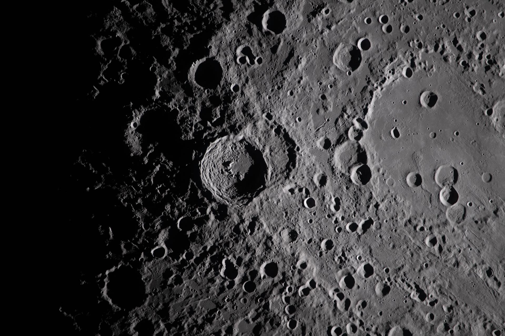
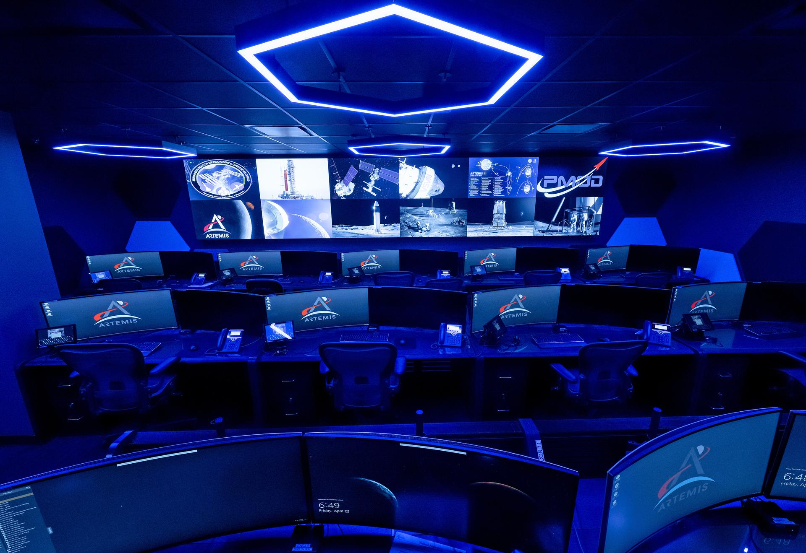

NASA Space Apps 2026, Lunar Landing Site Navigator challenge
Pick a landing site and a date. SEAL follows the Sun and Earth across the polar sky, hour by hour, and shows how long a lander stays powered and in contact.
Scroll to explore the missionMission Context
Near the lunar south pole, the Sun can skim the horizon while Earth dips out of view. Local ridges can block either one, affecting solar power and communication even when a location looks promising from orbit.

What SEAL Does
Start with a candidate landing site and a time to explore.
See when sunlight and Earth are visible above the local horizon.
Explore how lander height and battery capacity affect operation.
Our Goal
Help mission teams evaluate where and when a lunar lander can stay powered by sunlight and connected to Earth.

Pick your landing date